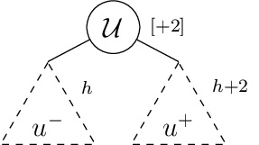
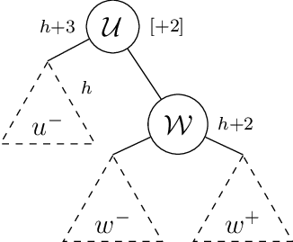
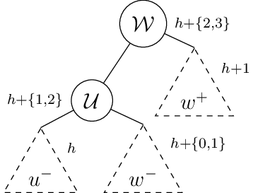
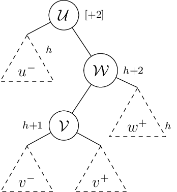
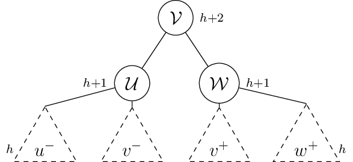

AVL trees¶
In the earlier section on binary search trees, we saw how the naive insert
mechanism can produce an unbalanced tree that effectively has the same lookup
complexity as that of a linked list - i.e. \(\mathcal{O}(N)\). The advantage of a binary
search tree is that it can be said to be “weight balanced” - i.e. if you assign
a constant “weight” to each node, then the left and right children (in most
cases) have roughly the same weight. However, if we insist that this condition
be met as we update the tree with new nodes or delete nodes, then these
insertion/deletion operations turn out to be \(\mathcal{O}(N)\) in the worst case - i.e. we
may have to touch every node in the tree in some cases. It is somewhat easy to
see why that may be the case by comparing the tree to an array that needs to be
maintained in a sorted form to enable fast (i.e. \(\mathcal{O}(\text{log}(N))\)) lookup. So adding
an element to an array that we’ll immediately process to ensure that it is
sorted, amounts to scanning the array to figure out where to insert the new
element (\(\mathcal{O}(\text{log}(N))\)) and then rewrite the left and right indices of the
new \(N+1\) sized array (\(\mathcal{O}(N)\)).
Obviously, we want to do better at insertion and deletion. Note that in general, an \(\mathcal{O}(\text{log}(N))\) complexity is pretty awesome because the log function grows extremely slowly. \(N\) needs to grow to about 1 billion before the log function comes to around \(30\). So for many practical (relatively) small scale data, logarithmic growth is as good as \(\mathcal{O}(1)\) .. if you can forgive a 10x constant factor.
So if we can come up with a mechanism by which we can efficiently rebalance a tree as we insert/delete nodes, we would have a very usable key-value data structure at hand for a wide variety of use cases. That’s what AVL trees (and similar family of sefl balancing trees) do. AVL trees are named after their inventors - Georgy Adelson-Velsky and Evgenii Landis – i.e. putting their last names together Adelson-Velsky and Landis.
AVL trees have a few tricks to them that help keep lookup efficient after any number of insertions and deletions. Before we get to those though, we need a few definitions –
- Height of a tree (or sub-tree)
This is an integer defined recursively as – a) the height of a
NULLsubtree is 0 and b) the height of any node is 1 + the greater of the heights of its two children.- Balance factor of a node
For each node, we attribute a “balance factor” that describes how balanced its children are. The balance factor is the difference \(\text{height}(\text{right}(n)) - \text{height}(\text{left}(n))\).
The ordering constraint holds at every node in an AVL tree, just like binary search trees. Without the ordering constraint, we won’t be able to use these trees as “search trees”. The ordering constraint basically states that –
\[\begin{split}& \text{max\_key}(\text{left}(n)) < \text{key}(n) < \text{min\_key}(\text{right}(n)) \\ & \text{for all nodes } n \text{ in the tree}\end{split}\]Every node in an AVL tree has a balance factor of \(\{-1,0,1\}\). i.e. the absolute value of the balance factor must be less than or equal to 1. Expressing balance in terms of the height as opposed to the count of nodes has the advantage that it is easy to maintain while yielding tree structures that have (on the average) the same performance as strictly balanced binary search trees, even though AVL trees are not “weight balanced” like strict binary search trees are.
So - a tree is said to be an “AVL tree” if both the above conditions – i.e. the ordering constraint and the balance constraint – hold at every node.
Rebalancing operations¶
So the question now is – how do we maintain those data structure invariants as we do insertions and deletions?
The answer lies in a couple of types of rebalancing operations that have to applied to unbalanced nodes after any insertion or deletion, starting from those unbalanced nodes closest to the point of insertion/deletion and working our way upwards towards the root. That is, we’ll need \(\mathcal{O}(\text{log}(N))\) rebalancing steps in the worst case for each insertion/deletion.
Consider such an unbalanced node \(\mathcal{U}\) shown in Fig. 1. Since the height of a subtree cannot change by more than \(1\) when an insertion or deletion is made, we know for sure that the unbalanced node’s balance factor must be either \(-2\) or \(+2\). In the latter case, the right child is taller/deeper than the left child and in the former cases it is the other way around. So any procedure we apply to correct the latter case can be mirrored for the other case.

Fig. 1 An unbalanced node
In the above figure, we consider an unbalanced node \(\mathcal{U}\) that has a balance factor of 2, and has its two balanced subtrees \(\mathcal{U}^-\) and \(\mathcal{U}^+\) of heights \(h\) and \(h+2\) respectively.
We can now expand \(\mathcal{U}^+\) into its top node \(\mathcal{W}\) as shown in Fig. 2.

Fig. 2 A right-unbalanced node
Since our inductive assumption is that the node \(\mathcal{W}\) is balanced (as are all node descendants of \(\mathcal{U}\)), the heights of \(w^+\) and \(w^-\) can at most differ by 1 and the max of the two must be \(h+1\). This gives us three cases to deal with –
We can restore balance for in the first two cases using a “left rotation” that moves \(\mathcal{W}\) upwards and \(\mathcal{U}\) downwards to the positions shown in Fig. 3.

Fig. 3 Left rotation applied
Now to deal with third case of \(\text{height}(w^-) = h+1 \text{ , } \text{height}(w^+) = h\), where the left subtree of the right child of the unbalanced node is the one that’ deeper. In this case, we have to apply a “double rotation” – fist a “right totation” at node \(\mathcal{W}\) and then a left rotation at node \(\mathcal{U}\). Let’s first look at the unbalanced structure by exploding one more level of the \(w^-\) node, since we know it has a height of \(h+1\) for this case.

Fig. 4 Right-left unbalanced node
The nodes \(v^-\) and \(v^+\), shown in Fig. 4, can have height combinations from \({(h-1,h),(h,h-1),(h,h)}\). This is because at least one of the two nodes must be of height \(h\) in order that the parent have height \(h+1\).
The double rotation operation, as shown in Fig. 5, essentially moves the \(\mathcal{V}\) node to the top and brings the \(\mathcal{U}\) node down to the level of \(\mathcal{W}\).

Fig. 5 Right-left rebalancing using double rotation
Recurse back to the root¶
Having fixed the imbalance at the node where we found it (again, assuming that no other descendant of the node is imbalanced), we now need to update its height, recurse back up to its parent, and check it for imbalance, repair if necessary and keep doing it until we reach back to the root and we’re ensured that the AVL tree has been rebalanced. Since our procedure restores the balance criterion when we can assume that all nodes below the unbalanced node already meet the criterion, we can be assured that by induction we will be able to apply the same procedure to the parent node in case it is subsequently found to be unbalanced.
Code¶
Let’s start with the basic structures –
typedef struct Node *avltree;
struct Node {
int key;
void *value;
int height; // This is new!
avltree left;
avltree right;
};
In the above structure, we’ve added a new field named height which stores the
height of the node once the structure is stable.
int height(avltree t) {
if (t == NULL) { return 0; }
return t->height;
}
// The recursive definition of "height" of a tree.
int calc_height(avltree t)
//@requires t != NULL
//@ensures \result >= height(t->left) && \result >= height(t->right)
{
if (t == NULL) { return 0; }
int h1 = calc_height(t->left);
int h2 = calc_height(t->right);
int h = h1;
if (h2 > h1) {
h = h2;
}
t->height = h+1;
return h;
}
We now need procedures to check the ordering criterion and the balancing criterion.
Warning
The code below is unchecked and more of a sketch than tested and ready code. I figured I’d rather share with you early than wait to fully check it. So if any of you want to validate it, the help is much appreciated. Note that the contract statements are not terminated with a “;”. This is a temporary hack to make the code show up nicely coloured for easy reading. If you’re copying the code to try it, please do add the missing “;” for the contract lines.
int maxint(int m1, int m2) {
if (m1 > m2) { return m1; } else { return m2; }
}
// Computes the largest value of the key in the given tree or subtree.
int maxkey(avltree t)
//@requires t != NULL
{
int key = t->key;
if (t->left != NULL) {
int left = maxkey(t->left);
if (left > key) { key = left; }
}
if (t->right != NULL) {
int right = maxkey(t->right);
if (right > key) { key = right; }
}
return key;
}
// The counterpart of maxkey, minkey computes the minimum key.
int minkey(avltree t)
//@requires t != NULL
{
int key = t->key;
if (t->left != NULL) {
int left = minkey(t->left);
if (left < key) { key = left; }
}
if (t->right != NULL) {
int right = minkey(t->right);
if (right < key) { key = right; }
}
return key;
}
// Returns true if this node meets the ordering criterion.
// It does not make any statement about its children ... only
// that the particular given node (argument) meets the ordering
// criterion.
bool is_ordered(avltree t) {
if (t == NULL) { return true; }
if (t->left != NULL) {
if (maxkey(t->left) >= t->key) {
return false;
}
}
if (t->right != NULL) {
if (minkey(t->right) <= t->key) {
return false;
}
}
return true;
}
int balance_factor(avltree t)
//@requires t != NULL
{
return height(t->right) - height(t->left);
}
// Checks that a given tree node meets the balancing
// criterion, assuming that the height of all the children
// are already calculated.
bool is_balanced(avltree t) {
if (t == NULL) { return true; }
int bfactor = balance_factor(t);
return bfactor >= -1 && bfactor <= 1;
}
// Checks that all nodes in the tree meet the balancing and
// ordering criteria for the tree to be ab AVL tree.
bool is_avltree(avltree t) {
if (t == NULL) { return true; }
return is_balanced(t) && is_ordered(t) && is_avltree(t->left) && is_avltree(t->right);
}
// Computes the height of this node from the already computed heights
// of its children.
avltree fix_height(avltree t) {
if (t == NULL) { return t; }
int h1 = height(t->left);
int h2 = height(t->right);
if (h2 < h1) {
h2 = h1;
}
t->height = 1 + h2;
return t;
}
// Performs a "left rotation" operation on the given
// node and returns the new root. The following few functions
// all have the same shape - they perform a manipulation on the
// tree, fix the height of the nodes after the manipulation,
// and return the new root.
avltree rotate_left(avltree u)
//@requires u != NULL
{
avltree w = u->right;
avltree wminus = w->left;
u->right = wminus;
w->left = u;
fix_height(u);
return fix_height(w);
}
avltree rotate_right(avltree u)
//@requires u != NULL
{
avltree w = u->left;
avltree wplus = w->right;
u->left = wplus;
w->right = u;
fix_height(u);
return fix_height(w);
}
avltree rotate_right_left(avltree u)
//@requires u != NULL
{
avltree w = u->right;
avltree v = w->left;
avltree vminus = v->left;
avltree vplus = v->right;
v->left = u;
v->right = w;
u->right = vminus;
w->left = vplus;
fix_height(u);
fix_height(w);
return fix_height(v);
}
avltree rotate_left_right(avltree u)
//@requires u != NULL
{
avltree w = u->left;
avltree v = w->right;
avltree vplus = v->right;
avltree vminus = v->left;
v->right = u;
v->left = w;
u->left = vplus;
w->right = vminus;
fix_height(u);
fix_height(w);
return fix_height(v);
}
// Applies the discussed rotation manipulations to
// ensure that the given node ends up balanced.
// Assumes that its children are balanced already.
avltree balance_node(avltree t)
//@requires t != NULL
{
int b = balance_factor(t);
//@assert b >= -2 && b <= 2;
if (b == 2) {
if (t->right != NULL) {
if (height(t->right->right) >= height(t->right->left)) {
t = rotate_left(t);
} else {
t = rotate_right_left(t);
}
}
} else if (b == -2) {
if (t->left != NULL) {
if (height(t->left->left) >= height(t->left->right)) {
t = rotate_right(t);
} else {
t = rotate_left_right(t);
}
}
}
return t;
}
// Make a node that associates the given key with the given value.
avltree mk_avlnode(int key, void *value) {
avltree n = (avltree)alloc(struct Node);
n->key = key;
n->value = value;
n->height = 1;
n->left = NULL;
n->right = NULL;
return n;
}
// Lookup the node in the tree with the key, or return
// NULL if no such node exists.
avltree avltree_get(avltree t, int key) {
if (t == NULL) { return NULL; }
if (t->key == key) { return t; }
if (key < t->key) { return avltree_get(t->left, key); }
if (key > t->key) { return avltree_get(t->right, key); }
return NULL; // Unreachable.
}
// Sets a value to be associated with the given key.
// If the key already exists in the tree, it'll change
// the value stored in the node. If it doesn't, it'll
// add a new node at an appropriate point and ensure that
// the tree remains balanced.
avltree avltree_set(avltree t, int key, void *value) {
if (t == NULL) { return NULL; }
if (t->key == key) {
t->value = value;
return t;
}
if (key < t->key) {
if (t->left != NULL) {
t->left = avltree_set(t->left, key, value);
} else {
t->left = mk_avlnode(key, value);
}
}
if (key > t->key) {
if (t->right != NULL) {
t->right = avltree_set(t->right, key, value);
} else {
t->right = mk_avlnode(key, value);
}
}
return balance_node(t);
}